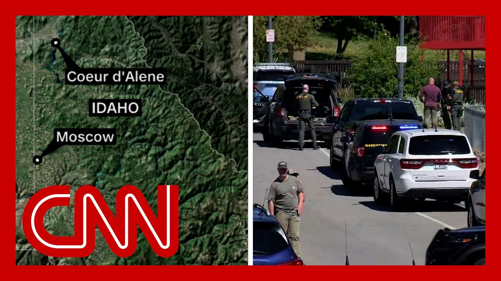

【CNN News 爱达荷州扑救灌木丛火灾时发生枪击多人受伤 20250630】
Summary: This is a breaking news report about an active shooter situation in Idaho where firefighters responding to a brush fire were attacked, resulting in at least two deaths and unknown casualties, with law enforcement still under sniper fire.
摘要： 这是关于爱达荷州一起活跃枪手事件的突发新闻报道，消防员在扑救灌木丛火灾时遭到袭击，造成至少两人死亡和不明伤亡，执法人员仍在遭受狙击火力。

⏱️ Estimated Reading Time: 15 min
📚 六级生词 📚 雅思生词 📚 托福生词 📚 专八生词 📚 SAT生词 📚 考研生词 📚 GRE生词 📚 高考生词
This information is very preliminary and is subject to change.
此信息非常初步，可能会发生变化。
We want to give you and the public as much information as quickly as possible.
我们希望尽快向您和公众提供尽可能多的信息。
So that approximately 121 pm this afternoon we received reports of a fire on the east side of Canfield Mountain.
大约今天下午1点21分，我们收到了关于坎菲尔德山东侧火灾的报告。
Fire assets responded to the scene and at approximately 2 pm this afternoon it was reported that firefighters were receiving shots fired at them.
消防力量赶到现场，大约下午2点，有报告称消防员遭到枪击。
We now have two deaths.
目前已有两人死亡。
We have an unknown amount of casualties.
伤亡人数尚不明确。
We still have civilians that are coming off of that mountain.
仍有平民从山上撤离。
We have we might have civilians that are stuck or in shock on that mountain.
我们可能有平民被困或受困于山上。
So this is a very very fresh situation.
因此这是一个非常非常新的情况。
We are actively taking sniper fire as we speak.
就在我们说话时，我们仍在遭受狙击火力。
This is a this is an active situation.
这是一个活跃的情况。
We have multiple agencies that are on scene from local and federal authorities and we are prepared to neutralize this suspect who is currently actively shooting at public safety personnel.
我们有来自地方和联邦当局的多个机构在现场，我们准备制服这名目前正在向公共安全人员开枪的嫌疑人。
We are prepared to neutralize this suspect as quickly as possible.
我们准备尽快制服这名嫌疑人。
And that's really all that we know as of right now.
这就是我们目前所知道的一切。
We don't know who the suspects are.
我们不知道嫌疑人是谁。
We don't know how many there are.
我们不知道有多少人。
So I know that it's very very early and I don't think that any questions would yield anything.
所以我知道现在非常非常早，我认为任何问题都不会得到答案。
We are following breaking news tonight.
我们正在跟踪今晚的突发新闻。
Multiple firefighters have been shot in Idaho and at least two people are dead.
爱达荷州多名消防员遭到枪击，至少两人死亡。
This is happening in Corde-Alain at Canfield Mountain Park with hiking and bike trails.
这发生在科德-阿兰的坎菲尔德山公园，那里有徒步和自行车道。
So this is right on the border between Washington State and Idaho.
所以这正好在华盛顿州和爱达荷州的边界上。
Officials say firefighters were responding to a brush fire and officials just had a press conference a little while ago where the sheriff said law enforcement officers are still actively taking rapid sniper fire.
官员们表示，消防员正在应对灌木丛火灾，官员们不久前举行了新闻发布会，警长表示执法人员仍在遭受快速狙击火力。
I want to bring in CNN's senior law enforcement analyst and former Washington DC police chief Charles Ramsey and former Boston police commissioner chief Ed Davis.
我想请来CNN的高级执法分析师、前华盛顿特区警察局长查尔斯·拉姆齐和前波士顿警察局长埃德·戴维斯。
Chief Davis, I want to start with you because look still a very much active scene.
戴维斯局长，我想从您开始，因为现场仍然非常活跃。
They're saying they're taking active sniper fire.
他们说他们正在遭受活跃的狙击火力。
They believe it is coming in rapid fire as well.
他们认为火力也很迅速。
Can you just talk to me about how you are assessing what we know so far from this situation?
您能谈谈您如何评估我们目前对这种情况的了解吗？
I want to certainly, you know this is sort of the police department's worst nightmare.
我当然知道，这是警察部门最糟糕的噩梦。
You have someone in a heavily wooded area and they're a distance away from a populated locations.
有人在树木茂密的地区，远离人口密集的地方。
So you have to move assets into the area to respond to the threat.
因此您必须调动力量进入该地区应对威胁。
And our SWAT teams are very well trained.
我们的特警队训练有素。
They can operate and they need any kind of territory.
他们可以在任何地形上行动。
So they're not unused to operating in a wooded area.
因此他们对在树木茂密的地区行动并不陌生。
We had a similar type incident in New Hampshire about 20 years ago where the police responded very quickly and effectively.
大约20年前，新罕布什尔州发生过类似事件，警方反应非常迅速有效。
But you really need to have air assets and the ability to move in what essentially are ground troops to go after something like this.
但您确实需要空中力量和调动地面部队的能力来应对这样的事情。
This is more of military operation than the typical police SWAT response that were used to.
这更像是军事行动，而不是我们习惯的典型警察特警反应。
And chief Ramsey just on that point trying to bring in additional resources.
拉姆齐局长，关于这一点，试图调动更多资源。
What are the conversations like right now if you are the local police chief, you're the local sheriff and you are trying to get additional resources.
如果您是当地警察局长或警长，试图获取更多资源，现在的对话是什么样的。
And what are you calling in?
您在呼叫什么？
What helps in a situation like this?
在这种情况下什么有帮助？
Well, you know, jurisdictions trained together and they have mutual aid agreements.
您知道，辖区一起训练并有互助协议。
This is close to the border near Washington.
这靠近华盛顿附近的边界。
So I'm sure they probably have reached out that far to try to get some additional assets.
所以我确信他们可能已经联系到那里以获取更多力量。
You have federal agencies that are responding.
有联邦机构正在响应。
So they're going to have a lot of assets available to them.
因此他们将有很多可用的力量。
Problem is, as Ed mentioned, it's very difficult.
问题是，正如埃德提到的，这非常困难。
This is a heavily wooded area.
这是一个树木茂密的地区。
You have at least one shooter.
至少有一名枪手。
And again, the sheriff didn't mention whether or not they were getting sniper fire simultaneously in different directions.
而且，警长没有提到他们是否在不同方向同时遭受狙击火力。
Or could this be one person changing positions and firing from this different positions to give the appearance that there's more than one shooter?
或者这可能是一个人改变位置并从不同位置开枪，给人一种有多名枪手的印象？
There's a lot of unknown questions.
有很多未知的问题。
And I imagine you have some wounded people there that cannot be evacuated because of the danger.
我想那里有一些伤员因为危险无法撤离。
So this is a very dynamic scene.
因此这是一个非常动态的场景。
They'll be using air assets.
他们将使用空中力量。
They'll be using ground.
他们将使用地面力量。
They'll be using dogs.
他们将使用警犬。
They'll be using everything at their disposal to try to zero in on this person or persons that are responsible for this.
他们将使用一切可用手段来锁定对此负责的人。
But this could go on for a while, unfortunately.
但不幸的是，这可能会持续一段时间。
And as it gets dark, it becomes even more challenging.
随着天色变暗，情况变得更加具有挑战性。
And just to give our audience an idea of the urgency of the situation, we were listening to the local sheriff there earlier who said, quite literally, I'm hoping someone has a clear shot.
为了让观众了解情况的紧迫性，我们早些时候听了当地警长的话，他说，字面意思是，我希望有人有清晰的射击机会。
That is the level of consideration where they are right now as they try to identify, again, if it's one shooter, if that's changing locations as chief Ramsay just laid out, or if it's multiple shooters firing from different locations is really in an evaluation stage right now trying to figure out what the situation actually is.
这就是他们目前的考虑水平，他们试图再次确定，如果是一名枪手，是否像拉姆齐局长所说的那样改变位置，或者是否有多个枪手从不同位置开枪，目前正处于评估阶段，试图弄清楚实际情况。
And chief Davis, look, a shelter in place order is in effect.
戴维斯局长，看，就地避难令已经生效。
But I can imagine some of the major considerations here when you're trying to secure a scene is also trying to make sure the scene doesn't spill over into civilian areas, into residential areas, trying to sort of contain, I guess, that level of danger.
但我可以想象，当您试图控制现场时，一些主要考虑还包括确保现场不会蔓延到平民区、住宅区，试图控制这种危险程度。
What are those conversations typically like at this stage in an incident like this?
在这种事件的这个阶段，这些对话通常是什么样的？
And I guess where do you start on that front?
我想您在这方面从哪里开始？
Well, it's very similar to things that we've seen in the past.
这与我们过去看到的情况非常相似。
And one of the big issues, as Chuck said, bringing in air assets for command and control could be an extremely important part of this.
正如查克所说，其中一个重要问题是，引入空中力量进行指挥和控制可能是非常重要的一部分。
I've seen a helicopter on scene already.
我已经看到现场有一架直升机。
But the big thing is trying to lock this place down.
但重要的是试图封锁这个地方。
You know, you don't want this guy to somehow escape from from the area.
您知道，您不希望这个人以某种方式逃离该地区。
And to your point, Omar, you know, going into places that haven't been affected yet.
奥马尔，正如您所说，进入尚未受到影响的地方。
So one of the big issues is a perimeter.
因此其中一个重要问题是建立警戒线。
And the, you know, that's clearly fundamental to what we do in a situation like this.
您知道，这显然是我们在这种情况下所做的基本工作。
But a perimeter takes a lot of staffing.
但建立警戒线需要大量人员。
So it's a matter of moving resources into the area.
因此这是一个将资源调入该地区的问题。
And unlike the military, which can move large numbers of people around, they have the air assets to move small units into combat.
与军方不同，军方可以调动大量人员，他们有空中力量将小部队投入战斗。
Police helicopters don't have that kind of capacity.
警用直升机没有这种能力。
You might get two or three people, but you're not going to get sufficient numbers to set up a strong perimeter.
您可能会得到两三个人，但您无法获得足够的人数来建立强大的警戒线。
So a lot of it depends on the terrain, a lot of it depends on how many people they can get in there.
因此很大程度上取决于地形，很大程度上取决于他们能调动多少人。
And the equipment that these people have, these are high-powered rifles that are being used.
以及这些人拥有的装备，他们使用的是高威力步枪。
Handguns don't do the trick in a situation like this.
手枪在这种情况下不起作用。
You need to have similar type of weaponry that's being used against you.
您需要有类似类型的武器来对抗。
And, you know, as we can clearly see, that the local police and sheriff's department will be scaling up the resources they use to try and respond to this, given the gravity of the situation that we are looking at.
您知道，正如我们清楚看到的，鉴于我们所面临情况的严重性，当地警察和警长部门将扩大他们用于应对的资源。
Again, two people killed at this point as we understand from the sheriff.
再次，根据警长的说法，目前已有两人死亡。
Chief Ramsey, we've also heard from the deputy director of the FBI saying FBI assets are headed to the scene in Corte Lane to provide tactical and operational support.
拉姆齐局长，我们还听到FBI副局长说FBI力量正前往科特莱恩现场提供战术和行动支持。
Emphasizing it's an active scene as we've also heard from some local officials there on the scene.
强调这是一个活跃的现场，正如我们从现场一些当地官员那里听到的那样。
What exactly does tactical and operational support mean when you have the FBI coming in to assist what we've already seen happening at the local level?
当FBI介入协助我们在地方层面已经看到的情况时，战术和行动支持到底意味着什么？
Well, I mean, they have their version of SWAT in the FBI.
我的意思是，他们在FBI中有自己的特警版本。
They have other assets that they can bring to bear to try to, again, locate this individual.
他们有其他力量可以动用，再次尝试定位这个人。
That's the most important thing is Ed mentioned trying to establish her perimeter is difficult under normal circumstances, let alone in an environment like you're talking about right now.
最重要的是，正如埃德提到的，在正常情况下建立警戒线都很困难，更不用说在您现在谈论的这种环境中。
And it doesn't sound like they really know exactly where this individual is.
而且听起来他们并不确切知道这个人在哪里。
So it's going to make it even more difficult.
因此这将使情况更加困难。
But certainly the FBI, the ATF, all those federal agencies are very, very skilled in trying to neutralize a situation located in individual.
但FBI、ATF等所有联邦机构都非常擅长制服个人造成的情况。
They have the skill.
他们有技能。
They have the expertise to do it.
他们有专业知识。
And one thing I need to just make clear because it's been mentioned a couple times when the term neutralized has been used.
我需要澄清一件事，因为“制服”这个词被提到几次。
This is not deescalation type of situation.
这不是降级类型的情况。
This is an active shooter, a sniper.
这是一名活跃的枪手，一名狙击手。
He's killed two people.
他已经杀死两人。
Lord knows how many of them have been wounded and perhaps even killed that they can't get to.
天知道有多少人受伤甚至死亡，他们无法接近。
If they get a clear shot, they're going to take it.
如果他们有机会，他们会开枪。
And that's just the way it is.
这就是现实。
But they've got to locate this individual.
但他们必须找到这个人。
They have got to stop the killing period.
他们必须停止杀戮。
And whatever it takes to do that is what they're going to do.
无论需要什么，他们都会去做。
And again, as we've heard from the sheriff, that seems to be the number one priority right now.
再次，正如我们从警长那里听到的，这似乎是现在的首要任务。
Again, as he just laid out plainly, as he was speaking to reporters, if someone has a clear shot in regards to his law enforcement folks, he wants them to take it.
再次，正如他明确表示的那样，他在对记者讲话时说，如果有人对他的执法人员有清晰的射击机会，他希望他们开枪。